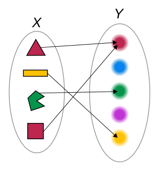
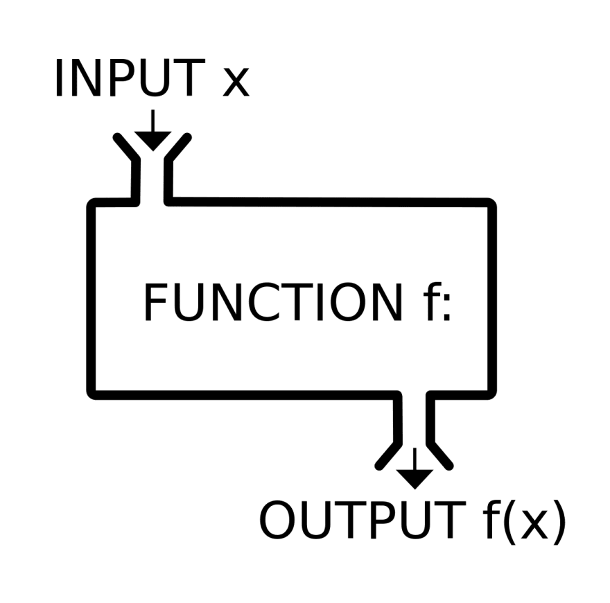

<!DOCTYPE html>
<html class="writer-html5" lang="es" >
<head>
  <meta charset="utf-8" /><meta name="generator" content="Docutils 0.18.1: http://docutils.sourceforge.net/" />

  <meta name="viewport" content="width=device-width, initial-scale=1.0" />
  <title>Clase 16: Programación funcional con Python &mdash; documentación de Clases de Python - </title>
      <link rel="stylesheet" href="_static/pygments.css" type="text/css" />
      <link rel="stylesheet" href="_static/css/theme.css" type="text/css" />
      <link rel="stylesheet" href="_static/rtd_overrides.css" type="text/css" />
  
        <script data-url_root="./" id="documentation_options" src="_static/documentation_options.js"></script>
        <script src="_static/jquery.js"></script>
        <script src="_static/underscore.js"></script>
        <script src="_static/_sphinx_javascript_frameworks_compat.js"></script>
        <script src="_static/doctools.js"></script>
        <script src="_static/translations.js"></script>
        <script async="async" src="https://cdn.jsdelivr.net/npm/mathjax@3/es5/tex-mml-chtml.js"></script>
    <script src="_static/js/theme.js"></script>
    <link rel="search" title="Búsqueda" href="search.html" />
    <link rel="next" title="Ejercicios" href="ejercicios.html" />
    <link rel="prev" title="Clase 15: Interfaces con otros lenguajes" href="clase_15.html" /> 
</head>

<body class="wy-body-for-nav"> 
  <div class="wy-grid-for-nav">
    <nav data-toggle="wy-nav-shift" class="wy-nav-side">
      <div class="wy-side-scroll">
        <div class="wy-side-nav-search" >
            <a href="index.html" class="icon icon-home"> Clases de Python
            
          </a>
              <div class="version">
                IB - 2023
              </div>
<div role="search">
  <form id="rtd-search-form" class="wy-form" action="search.html" method="get">
    <input type="text" name="q" placeholder="Buscar documentos" />
    <input type="hidden" name="check_keywords" value="yes" />
    <input type="hidden" name="area" value="default" />
  </form>
</div>
        </div><div class="wy-menu wy-menu-vertical" data-spy="affix" role="navigation" aria-label="Navigation menu">
              <p class="caption" role="heading"><span class="caption-text">Dictado de las clases</span></p>
<ul class="current">
<li class="toctree-l1"><a class="reference internal" href="clase_00.html">Clase 0: Introducción al lenguaje Python orientado a Ingenierías y Física</a></li>
<li class="toctree-l1"><a class="reference internal" href="clase_01.html">Clase 1: Introducción al lenguaje</a></li>
<li class="toctree-l1"><a class="reference internal" href="clase_02.html">Clase 2: Tipos de datos y control</a></li>
<li class="toctree-l1"><a class="reference internal" href="clase_03.html">Clase 3: Tipos complejos y control de flujo</a></li>
<li class="toctree-l1"><a class="reference internal" href="clase_04.html">Clase 4: Funciones</a></li>
<li class="toctree-l1"><a class="reference internal" href="clase_05.html">Clase 5: Entrada y salida, decoradores, y errores</a></li>
<li class="toctree-l1"><a class="reference internal" href="clase_06.html">Clase 6: Programación Orientada a Objetos</a></li>
<li class="toctree-l1"><a class="reference internal" href="clase_07.html">Clase 7: Control de versiones y biblioteca standard</a></li>
<li class="toctree-l1"><a class="reference internal" href="clase_08.html">Clase 8: Introducción a Numpy</a></li>
<li class="toctree-l1"><a class="reference internal" href="clase_09.html">Clase 9: Visualización</a></li>
<li class="toctree-l1"><a class="reference internal" href="clase_10.html">Clase 10: Más información sobre <strong>Numpy</strong></a></li>
<li class="toctree-l1"><a class="reference internal" href="clase_11.html">Clase 11: Introducción al paquete Scipy</a></li>
<li class="toctree-l1"><a class="reference internal" href="clase_12.html">Clase 12: Graficación usando Plotly</a></li>
<li class="toctree-l1"><a class="reference internal" href="clase_13.html">Clase 13: Interpolación y ajuste de curvas (fiteo)</a></li>
<li class="toctree-l1"><a class="reference internal" href="clase_14.html">Clase 14: Animaciones e interactividad</a></li>
<li class="toctree-l1"><a class="reference internal" href="clase_15.html">Clase 15: Interfaces con otros lenguajes</a></li>
<li class="toctree-l1 current"><a class="current reference internal" href="#">Clase 16: Programación funcional con Python</a><ul>
<li class="toctree-l2"><a class="reference internal" href="#los-errores-al-programar">Los errores al programar</a></li>
<li class="toctree-l2"><a class="reference internal" href="#los-errores-en-notebooks">Los errores en notebooks</a></li>
<li class="toctree-l2"><a class="reference internal" href="#mutabilidad">Mutabilidad</a></li>
<li class="toctree-l2"><a class="reference internal" href="#funciones">Funciones</a><ul>
<li class="toctree-l3"><a class="reference internal" href="#funciones-puras">Funciones puras</a></li>
<li class="toctree-l3"><a class="reference internal" href="#funciones-de-primer-orden-o-primera-clase">Funciones de primer orden o primera clase</a></li>
<li class="toctree-l3"><a class="reference internal" href="#funciones-de-orden-superior">Funciones de orden superior</a></li>
</ul>
</li>
<li class="toctree-l2"><a class="reference internal" href="#inmutabilidad">Inmutabilidad</a></li>
<li class="toctree-l2"><a class="reference internal" href="#no-mas-loops">No más loops</a></li>
<li class="toctree-l2"><a class="reference internal" href="#ejercicios-16">Ejercicios 16</a></li>
</ul>
</li>
</ul>
<p class="caption" role="heading"><span class="caption-text">Ejercicios de Clase</span></p>
<ul>
<li class="toctree-l1"><a class="reference internal" href="ejercicios.html">Ejercicios</a></li>
</ul>
<ul>
<li class="toctree-l1"><a class="reference internal" href="entregas_ejercicios.html">Entrega de ejercicios</a></li>
<li class="toctree-l1"><a class="reference internal" href="programa_detalle.html">Programa Detallado</a></li>
</ul>

        </div>
      </div>
    </nav>

    <section data-toggle="wy-nav-shift" class="wy-nav-content-wrap"><nav class="wy-nav-top" aria-label="Mobile navigation menu" >
          <i data-toggle="wy-nav-top" class="fa fa-bars"></i>
          <a href="index.html">Clases de Python</a>
      </nav>

      <div class="wy-nav-content">
        <div class="rst-content">
          <div role="navigation" aria-label="Page navigation">
  <ul class="wy-breadcrumbs">
      <li><a href="index.html" class="icon icon-home"></a> &raquo;</li>
      <li>Clase 16: Programación funcional con Python</li>
      <li class="wy-breadcrumbs-aside">
            <a href="_sources/clase_16.rst.txt" rel="nofollow"> Ver código fuente de la página</a>
      </li>
  </ul>
  <hr/>
</div>
          <div role="main" class="document" itemscope="itemscope" itemtype="http://schema.org/Article">
           <div itemprop="articleBody">
             
  <section id="clase-16-programacion-funcional-con-python">
<span id="clase-16"></span><h1>Clase 16: Programación funcional con Python<a class="headerlink" href="#clase-16-programacion-funcional-con-python" title="Permalink to this heading"></a></h1>
<p>La programación funcional es un paradigma de programación, de la misma
manera que otros paradigmas, como la programación orientada a objetos, o
la programación estructurada.</p>
<p>Existen lenguajes de programación que son directamente funcionales, esto
es, implementan las reglas de la programación funcional directamente
(por ejemplo, Lisp, Haskell, F#, etc.). Desde un punto de vista
histórico, la programación funcional tiene su origen en la visión de
Alonzo Church del problema de la decisión (<em>Entscheidungsproblem</em>), y es
complementaria a la más conocida, propuesta por Alan Turing.</p>
<p>Python es un lenguaje orientado a objetos (todo elemento del lenguaje es
un objeto), de modo tal que no es posible hablar de un paradigma
funcional en Python, sino mas bien de un <em>estilo</em> de programación
funcional.</p>
<p>Un trabajo interesante es el siguiente: ’Why Functional Programming
Matters: <a class="reference external" href="http://www.cse.chalmers.se/~rjmh/Papers/whyfp.pdf">http://www.cse.chalmers.se/~rjmh/Papers/whyfp.pdf</a>”.</p>
<section id="los-errores-al-programar">
<h2>Los errores al programar<a class="headerlink" href="#los-errores-al-programar" title="Permalink to this heading"></a></h2>
<p>En el continuo devenir de la programación, uno se encuentra,
principalmente, resolviendo errores. Un resumen de los errores posibles
en un código se pueden encontrar en la expresión</p>
<blockquote>
<div><p><code class="docutils literal notranslate"><span class="pre">i</span> <span class="pre">=</span> <span class="pre">i+1</span></code></p>
</div></blockquote>
<p>En esta expresión podemos encontrar tres tipos de errores:</p>
<ul class="simple">
<li><p><em>Error de lectura</em> : el valor de <code class="docutils literal notranslate"><span class="pre">i</span></code> en el lado derecho no es el
que efectivamente uno desearía, es decir, el código está leyendo un
valor incorrecto.</p></li>
<li><p><em>Error de escritura</em> : el valor de <code class="docutils literal notranslate"><span class="pre">i</span></code> en el lado izquierdo no es
el que efectivamente uno desearía, es decir, estamos guardando la
expresión en una variable incorrecta.</p></li>
<li><p><em>Error de cómputo</em> : que se produce, por ejemplo, porque no queremos
sumar 1 sino 2, o queremos restar el valor de i.</p></li>
</ul>
<p>Existe un cuarto tipo de error que aparece y tiene que ver con un <em>error
de flujo</em>, en el cual el código se ejecuta en una rama que no es la
deseada, debido a que una condición lógica no se cumple tal como se
esperaba. O por ejemplo, el orden en que se ejecutan las sentencias no
es el adecuado:</p>
<div class="highlight-python notranslate"><div class="highlight"><pre><span></span><span class="c1"># Función que calcula (x+1)(x+2)</span>
<span class="k">def</span> <span class="nf">f</span><span class="p">(</span><span class="n">x</span><span class="p">):</span>
    <span class="n">x</span> <span class="o">=</span> <span class="n">x</span><span class="o">+</span><span class="mi">1</span>
    <span class="n">y</span> <span class="o">=</span> <span class="n">x</span><span class="o">+</span><span class="mi">1</span>
    <span class="k">return</span> <span class="n">x</span><span class="o">*</span><span class="n">y</span>
</pre></div>
</div>
<div class="highlight-python notranslate"><div class="highlight"><pre><span></span><span class="c1"># Función que calcula (x+1)(x+2) ?? Mmmm.....</span>
<span class="k">def</span> <span class="nf">g</span><span class="p">(</span><span class="n">x</span><span class="p">):</span>
    <span class="n">y</span> <span class="o">=</span> <span class="n">x</span><span class="o">+</span><span class="mi">1</span>
    <span class="n">x</span> <span class="o">=</span> <span class="n">x</span><span class="o">+</span><span class="mi">1</span>
    <span class="k">return</span> <span class="n">x</span><span class="o">*</span><span class="n">y</span>
</pre></div>
</div>
<div class="highlight-python notranslate"><div class="highlight"><pre><span></span><span class="nb">print</span><span class="p">(</span><span class="n">f</span><span class="p">(</span><span class="mi">3</span><span class="p">))</span>
<span class="nb">print</span><span class="p">(</span><span class="n">g</span><span class="p">(</span><span class="mi">3</span><span class="p">))</span>
</pre></div>
</div>
<div class="highlight-default notranslate"><div class="highlight"><pre><span></span><span class="mi">20</span>
<span class="mi">16</span>
</pre></div>
</div>
</section>
<section id="los-errores-en-notebooks">
<h2>Los errores en notebooks<a class="headerlink" href="#los-errores-en-notebooks" title="Permalink to this heading"></a></h2>
<p>Además de las complejidades propias de la programación, que están
asociadas al <em>dominio</em> donde se encuentra el problema que uno quiere
resolver, y a las dificultades que eso implica; los <em>notebooks</em>
introducen también una dificultad adicional: uno puede redefinir los
datos en celdas posteriores, pero puede volver ‘atrás’ en el código y
recalcular otra celda. Veamos un
<a class="reference external" href="https://verve.com/blog/jupyter-notebooks/">ejemplo</a>:</p>
<div class="highlight-python notranslate"><div class="highlight"><pre><span></span><span class="n">data</span> <span class="o">=</span> <span class="p">[</span><span class="mi">1</span><span class="p">,</span><span class="mi">2</span><span class="p">,</span><span class="mi">3</span><span class="p">,</span><span class="mi">4</span><span class="p">]</span>
</pre></div>
</div>
<div class="highlight-python notranslate"><div class="highlight"><pre><span></span><span class="k">def</span> <span class="nf">prom</span><span class="p">(</span><span class="n">a</span><span class="p">):</span>
    <span class="n">s</span> <span class="o">=</span> <span class="nb">sum</span><span class="p">(</span><span class="n">a</span><span class="p">)</span>
    <span class="n">n</span> <span class="o">=</span> <span class="nb">len</span><span class="p">(</span><span class="n">a</span><span class="p">)</span>
    <span class="k">return</span> <span class="n">s</span><span class="o">/</span><span class="n">n</span>
</pre></div>
</div>
<div class="highlight-python notranslate"><div class="highlight"><pre><span></span><span class="n">prom</span><span class="p">(</span><span class="n">data</span><span class="p">)</span>
</pre></div>
</div>
<div class="highlight-default notranslate"><div class="highlight"><pre><span></span><span class="mf">2.5</span>
</pre></div>
</div>
<figure class="align-default" id="id1">

<figcaption>
<p><span class="caption-text">Más código</span><a class="headerlink" href="#id1" title="Enlace permanente a esta imagen"></a></p>
</figcaption>
</figure>
<div class="highlight-python notranslate"><div class="highlight"><pre><span></span><span class="n">data</span> <span class="o">=</span> <span class="s2">&quot;Some data&quot;</span>
<span class="nb">print</span><span class="p">(</span><span class="nb">len</span><span class="p">(</span><span class="n">data</span><span class="p">))</span>
</pre></div>
</div>
<div class="highlight-default notranslate"><div class="highlight"><pre><span></span><span class="mi">9</span>
</pre></div>
</div>
</section>
<section id="mutabilidad">
<h2>Mutabilidad<a class="headerlink" href="#mutabilidad" title="Permalink to this heading"></a></h2>
<p>Los problemas que vemos arriba se deben a la <em>mutabilidad</em>: las
<em>variables</em> pueden cambiar (esto es, ser reescritas) a lo largo del
código. Ahora bien, pareciera que la mutabilidad es intrínseca a la
computación, al fin y al cabo, en el hardware hay una cantidad limitada
de memoria y de registros que son continuamente reescritos para que
nuestro código corra. Sin embargo, los lenguajes de programación de alto
nivel que usamos nos alejan (afortunadamente) del requerimiento de
mantener el estado de la memoria y los registros explícitamente en el
código (y en el algoritmo en nuestra cabeza).</p>
<p>La pregunta que cabe entonces es ¿cómo hacer un código que prevenga la
mutabilidad, pero que a la vez me permita transformar los datos para
resolver mi problema? La respuesta viene de la mano de un ente muy
conocido en mátemáticas: <em>las funciones</em></p>
</section>
<section id="funciones">
<h2>Funciones<a class="headerlink" href="#funciones" title="Permalink to this heading"></a></h2>
<p>Una función desde el punto de vista matemático es una relación que a
cada elemento de un conjunto le asocia exactamente un elemento de otro
conjunto. Estos conjuntos pueden ser números, vectores, matrices en el
mundo matemático,</p>
<h3><center><p><span class="math notranslate nohighlight">\(y = f(x)\)</span></p>
</center></h3><p>o, en un mundo más físico, peras, manzanas, nombres, apellidos, <a class="reference external" href="https://commons.wikimedia.org/w/index.php?curid=20802095">objetos
varios</a>:</p>
<figure class="align-default" id="id2">

<figcaption>
<p><span class="caption-text">una funcion</span><a class="headerlink" href="#id2" title="Enlace permanente a esta imagen"></a></p>
</figcaption>
</figure>
<p>Estas funciones tienen dos características fundamentales para usar en
programación: - Permiten “transformar” un valor en otro - El valor
original <strong>no</strong> se modifica</p>
<p>Es decir que el uso de funciones, al estilo matemático, en un código
resuelven el problema de la mutabilidad, pero a la vez me permiten
“transformar”, es decir, crear nuevos valores a partir del valor
original.</p>
<section id="funciones-puras">
<h3>Funciones puras<a class="headerlink" href="#funciones-puras" title="Permalink to this heading"></a></h3>
<p>El análogo computacional de las funciones matemáticas se llaman
<em>funciones puras</em>. Una función se dice pura cuando: - Siempre retorna el
mismo valor de salida para el mismo valor de entrada - No tiene efectos
colaterales (<em>side effects</em>)</p>
<figure class="align-default" id="id3">

<figcaption>
<p><span class="caption-text">una funcion</span><a class="headerlink" href="#id3" title="Enlace permanente a esta imagen"></a></p>
</figcaption>
</figure>
</section>
<section id="funciones-de-primer-orden-o-primera-clase">
<h3>Funciones de primer orden o primera clase<a class="headerlink" href="#funciones-de-primer-orden-o-primera-clase" title="Permalink to this heading"></a></h3>
<p>Un lenguaje se dice que tiene funciones de primera clase cuando son
tratadas exactamente igual que otros valores o variables.</p>
</section>
<section id="funciones-de-orden-superior">
<h3>Funciones de orden superior<a class="headerlink" href="#funciones-de-orden-superior" title="Permalink to this heading"></a></h3>
<p>Un lenguaje que permite pasar funciones como argumentos se dice que
acepta funciones de orden superior.</p>
<div class="highlight-python notranslate"><div class="highlight"><pre><span></span><span class="k">def</span> <span class="nf">square</span><span class="p">(</span><span class="n">x</span><span class="p">):</span>
    <span class="k">return</span> <span class="n">x</span><span class="o">*</span><span class="n">x</span>
</pre></div>
</div>
<div class="highlight-python notranslate"><div class="highlight"><pre><span></span><span class="k">def</span> <span class="nf">next</span><span class="p">(</span><span class="n">x</span><span class="p">):</span>
    <span class="k">return</span> <span class="n">x</span><span class="o">+</span><span class="mi">1</span>
</pre></div>
</div>
<div class="highlight-python notranslate"><div class="highlight"><pre><span></span><span class="n">a</span> <span class="o">=</span> <span class="mi">4</span>
<span class="n">b</span> <span class="o">=</span> <span class="nb">next</span><span class="p">(</span><span class="n">a</span><span class="p">)</span>
<span class="n">c</span> <span class="o">=</span> <span class="nb">next</span><span class="p">(</span><span class="nb">next</span><span class="p">(</span><span class="n">a</span><span class="p">))</span>
</pre></div>
</div>
<div class="highlight-python notranslate"><div class="highlight"><pre><span></span><span class="nb">print</span><span class="p">(</span><span class="n">a</span><span class="p">)</span>
<span class="nb">print</span><span class="p">(</span><span class="n">b</span><span class="p">)</span>
<span class="nb">print</span><span class="p">(</span><span class="n">c</span><span class="p">)</span>
</pre></div>
</div>
<div class="highlight-default notranslate"><div class="highlight"><pre><span></span><span class="mi">4</span>
<span class="mi">5</span>
<span class="mi">6</span>
</pre></div>
</div>
<div class="highlight-python notranslate"><div class="highlight"><pre><span></span><span class="k">def</span> <span class="nf">h</span><span class="p">(</span><span class="n">x</span><span class="p">):</span>
    <span class="k">return</span> <span class="p">(</span><span class="nb">next</span><span class="p">(</span><span class="n">x</span><span class="p">))</span><span class="o">*</span><span class="p">(</span><span class="nb">next</span><span class="p">(</span><span class="nb">next</span><span class="p">(</span><span class="n">x</span><span class="p">)))</span>
</pre></div>
</div>
<div class="highlight-python notranslate"><div class="highlight"><pre><span></span><span class="nb">print</span><span class="p">(</span><span class="n">h</span><span class="p">(</span><span class="mi">3</span><span class="p">))</span>
</pre></div>
</div>
<div class="highlight-default notranslate"><div class="highlight"><pre><span></span><span class="mi">20</span>
</pre></div>
</div>
<p>Si se tiene funciones puras, es posible componerlas</p>
<div class="highlight-python notranslate"><div class="highlight"><pre><span></span><span class="k">def</span> <span class="nf">compose</span><span class="p">(</span><span class="n">f</span><span class="p">,</span> <span class="n">g</span><span class="p">):</span>
    <span class="k">return</span> <span class="k">lambda</span> <span class="n">x</span><span class="p">:</span> <span class="n">f</span><span class="p">(</span><span class="n">g</span><span class="p">(</span><span class="n">x</span><span class="p">))</span>
</pre></div>
</div>
<div class="highlight-python notranslate"><div class="highlight"><pre><span></span><span class="n">next2</span> <span class="o">=</span> <span class="n">compose</span><span class="p">(</span><span class="nb">next</span><span class="p">,</span><span class="nb">next</span><span class="p">)</span>
</pre></div>
</div>
<div class="highlight-python notranslate"><div class="highlight"><pre><span></span><span class="nb">print</span><span class="p">(</span><span class="n">next2</span><span class="p">(</span><span class="n">a</span><span class="p">))</span>
</pre></div>
</div>
<div class="highlight-default notranslate"><div class="highlight"><pre><span></span><span class="mi">6</span>
</pre></div>
</div>
</section>
</section>
<section id="inmutabilidad">
<h2>Inmutabilidad<a class="headerlink" href="#inmutabilidad" title="Permalink to this heading"></a></h2>
<p>Usando funciones puras se garantiza la inmutabilidad de los valores
hacia adentro de la función. Pero, ¿qué sucede afuera? Python, al no ser
un lenguaje funcional <em>per se</em>, no tiene la capacidad de establecer la
inmutabilidad de cualquier valor, excepto para los casos de strings y
tuplas, además, obviamente, de las expresiones literales.</p>
<p><strong>Queda entonces en el programador la responsabilidad de no mutar los
datos…</strong></p>
<p><strong>… o usar anotaciones de tipos</strong></p>
<div class="highlight-python notranslate"><div class="highlight"><pre><span></span><span class="k">def</span> <span class="nf">cube</span><span class="p">(</span><span class="n">x</span><span class="p">:</span> <span class="nb">int</span><span class="p">)</span> <span class="o">-&gt;</span> <span class="nb">int</span><span class="p">:</span>
    <span class="k">return</span> <span class="n">x</span><span class="o">*</span><span class="n">x</span><span class="o">*</span><span class="n">x</span>
</pre></div>
</div>
<div class="highlight-python notranslate"><div class="highlight"><pre><span></span><span class="nb">print</span><span class="p">(</span><span class="n">cube</span><span class="p">(</span><span class="mi">2</span><span class="p">))</span>
</pre></div>
</div>
<div class="highlight-default notranslate"><div class="highlight"><pre><span></span><span class="mi">8</span>
</pre></div>
</div>
<p>Nótese que Python NO chequea los tipos de datos, no tiene manera en
forma nativa de hacerlo. Por eso puedo ejecutar la función <code class="docutils literal notranslate"><span class="pre">cube</span></code> con
floats, por ejemplo:</p>
<div class="highlight-python notranslate"><div class="highlight"><pre><span></span><span class="nb">print</span><span class="p">(</span><span class="n">cube</span><span class="p">(</span><span class="mf">3.0</span><span class="p">))</span>
</pre></div>
</div>
<div class="highlight-default notranslate"><div class="highlight"><pre><span></span><span class="mf">27.0</span>
</pre></div>
</div>
<p>Para poder utilizar la anotación de tipos en forma efectiva, se puede
recurrir a <code class="docutils literal notranslate"><span class="pre">`mypy</span></code> &lt;<a class="reference external" href="http://mypy-lang.org/index.html">http://mypy-lang.org/index.html</a>&gt;`__. Esta es una
aplicación que me permite comprobar tipos de datos anotados en Python.
Para instalar <code class="docutils literal notranslate"><span class="pre">mypy</span></code> usamos:</p>
<p><code class="docutils literal notranslate"><span class="pre">conda</span> <span class="pre">install</span> <span class="pre">mypy</span></code></p>
<div class="highlight-python notranslate"><div class="highlight"><pre><span></span><span class="n">cd</span> <span class="n">mypy_example</span>
</pre></div>
</div>
<div class="highlight-default notranslate"><div class="highlight"><pre><span></span><span class="o">/</span><span class="n">Users</span><span class="o">/</span><span class="n">flavioc</span><span class="o">/</span><span class="n">Library</span><span class="o">/</span><span class="n">Mobile</span> <span class="n">Documents</span><span class="o">/</span><span class="n">com</span><span class="o">~</span><span class="n">apple</span><span class="o">~</span><span class="n">CloudDocs</span><span class="o">/</span><span class="n">Documents</span><span class="o">/</span><span class="n">cursos</span><span class="o">/</span><span class="n">curso</span><span class="o">-</span><span class="n">python</span><span class="o">/</span><span class="n">mypy_example</span>
</pre></div>
</div>
<div class="highlight-python notranslate"><div class="highlight"><pre><span></span>!cat cube.py
</pre></div>
</div>
<div class="highlight-default notranslate"><div class="highlight"><pre><span></span><span class="k">def</span> <span class="nf">cube</span><span class="p">(</span><span class="n">x</span><span class="p">:</span> <span class="nb">int</span><span class="p">)</span> <span class="o">-&gt;</span> <span class="nb">int</span><span class="p">:</span>
    <span class="k">return</span> <span class="n">x</span><span class="o">*</span><span class="n">x</span><span class="o">*</span><span class="n">x</span>

<span class="k">def</span> <span class="nf">Hola</span><span class="p">(</span><span class="n">name</span><span class="p">:</span> <span class="nb">str</span><span class="p">)</span> <span class="o">-&gt;</span> <span class="nb">str</span><span class="p">:</span>
    <span class="k">return</span> <span class="s1">&#39;Hola &#39;</span> <span class="o">+</span> <span class="n">name</span>

<span class="k">def</span> <span class="nf">Hola2</span><span class="p">(</span><span class="n">name</span><span class="p">):</span>
    <span class="k">return</span> <span class="s1">&#39;Hola &#39;</span> <span class="o">+</span> <span class="n">name</span>


<span class="k">if</span> <span class="vm">__name__</span> <span class="o">==</span> <span class="s2">&quot;__main__&quot;</span><span class="p">:</span>

    <span class="n">a</span> <span class="o">=</span> <span class="n">cube</span><span class="p">(</span><span class="mi">2</span><span class="p">)</span>

    <span class="nb">print</span><span class="p">(</span><span class="n">a</span><span class="p">)</span>

    <span class="n">b</span> <span class="o">=</span> <span class="n">cube</span><span class="p">(</span><span class="mf">3.0</span><span class="p">)</span>   <span class="c1"># Esto no da error en Python, mypy si lo captura</span>

    <span class="nb">print</span><span class="p">(</span><span class="n">b</span><span class="p">)</span>

    <span class="nb">print</span><span class="p">(</span><span class="n">Hola</span><span class="p">(</span><span class="s1">&#39;Juan&#39;</span><span class="p">))</span>
    <span class="nb">print</span><span class="p">(</span><span class="n">Hola2</span><span class="p">(</span><span class="mi">3</span><span class="p">))</span> <span class="c1"># Esto da un error de concatenación</span>

    <span class="nb">print</span><span class="p">(</span><span class="n">Hola</span><span class="p">(</span><span class="mi">3</span><span class="p">))</span> <span class="c1"># Esto da un error de concatenación, y además mypy lo captura</span>
</pre></div>
</div>
<div class="highlight-python notranslate"><div class="highlight"><pre><span></span>!python3 cube.py
</pre></div>
</div>
<div class="highlight-default notranslate"><div class="highlight"><pre><span></span><span class="mi">8</span>
<span class="mf">27.0</span>
<span class="n">Hola</span> <span class="n">Juan</span>
<span class="n">Traceback</span> <span class="p">(</span><span class="n">most</span> <span class="n">recent</span> <span class="n">call</span> <span class="n">last</span><span class="p">):</span>
  <span class="n">File</span> <span class="s2">&quot;/Users/flavioc/Library/Mobile Documents/com~apple~CloudDocs/Documents/cursos/curso-python/mypy_example/cube.py&quot;</span><span class="p">,</span> <span class="n">line</span> <span class="mi">24</span><span class="p">,</span> <span class="ow">in</span> <span class="o">&lt;</span><span class="n">module</span><span class="o">&gt;</span>
    <span class="nb">print</span><span class="p">(</span><span class="n">Hola2</span><span class="p">(</span><span class="mi">3</span><span class="p">))</span> <span class="c1"># Esto da un error de concatenación</span>
  <span class="n">File</span> <span class="s2">&quot;/Users/flavioc/Library/Mobile Documents/com~apple~CloudDocs/Documents/cursos/curso-python/mypy_example/cube.py&quot;</span><span class="p">,</span> <span class="n">line</span> <span class="mi">8</span><span class="p">,</span> <span class="ow">in</span> <span class="n">Hola2</span>
    <span class="k">return</span> <span class="s1">&#39;Hola &#39;</span> <span class="o">+</span> <span class="n">name</span>
<span class="ne">TypeError</span><span class="p">:</span> <span class="n">can</span> <span class="n">only</span> <span class="n">concatenate</span> <span class="nb">str</span> <span class="p">(</span><span class="ow">not</span> <span class="s2">&quot;int&quot;</span><span class="p">)</span> <span class="n">to</span> <span class="nb">str</span>
</pre></div>
</div>
<div class="highlight-python notranslate"><div class="highlight"><pre><span></span>!mypy cube.py
</pre></div>
</div>
<div class="highlight-default notranslate"><div class="highlight"><pre><span></span>cube.py:19: error: Argument 1 to &quot;cube&quot; has incompatible type &quot;float&quot;; expected &quot;int&quot;
cube.py:26: error: Argument 1 to &quot;Hola&quot; has incompatible type &quot;int&quot;; expected &quot;str&quot;
Found 2 errors in 1 file (checked 1 source file)
</pre></div>
</div>
<p>Es posible que uno quiera usar <code class="docutils literal notranslate"><span class="pre">mypy</span></code> sobre un archivo de notebook
<code class="docutils literal notranslate"><span class="pre">ipynb</span></code>. Para eso hay que instalar la aplicación <code class="docutils literal notranslate"><span class="pre">nbQA</span></code> <a class="reference external" href="https://github.com/nbQA-dev/nbQA">más
detalles acá</a>.</p>
</section>
<section id="no-mas-loops">
<h2>No más loops<a class="headerlink" href="#no-mas-loops" title="Permalink to this heading"></a></h2>
<p>Si las funciones deben ser puras, y las ‘variables’ dejan de ser
variables y pasan a ser valores, entonces no puede haber loops en mi
código. Un loop necesita invariablemente un contador (<code class="docutils literal notranslate"><span class="pre">i</span> <span class="pre">=</span> <span class="pre">i+1</span></code>) que
necesariamente es una variable mutable. Así que así nomás, de un plumazo
no existen más loops.</p>
<p>¿Entonces? Entonces, todos los loops se reemplazan por llamados a
funciones recursivas, o se utilizan funciones de orden superior:</p>
<div class="highlight-python notranslate"><div class="highlight"><pre><span></span><span class="c1"># Filter</span>

<span class="n">l</span> <span class="o">=</span> <span class="p">[</span><span class="mi">1</span><span class="p">,</span><span class="mi">2</span><span class="p">,</span><span class="mi">3</span><span class="p">,</span><span class="mi">4</span><span class="p">,</span><span class="mi">5</span><span class="p">,</span><span class="mi">6</span><span class="p">]</span>

<span class="k">def</span> <span class="nf">es_par</span><span class="p">(</span><span class="n">x</span><span class="p">):</span>
    <span class="k">return</span> <span class="p">(</span><span class="n">x</span><span class="o">%</span><span class="mi">2</span> <span class="o">==</span> <span class="mi">0</span><span class="p">)</span>

<span class="n">pares</span> <span class="o">=</span> <span class="nb">list</span><span class="p">(</span><span class="nb">filter</span><span class="p">(</span><span class="n">es_par</span><span class="p">,</span><span class="n">l</span><span class="p">))</span>
<span class="nb">print</span><span class="p">(</span><span class="n">pares</span><span class="p">)</span>
</pre></div>
</div>
<div class="highlight-default notranslate"><div class="highlight"><pre><span></span><span class="p">[</span><span class="mi">2</span><span class="p">,</span> <span class="mi">4</span><span class="p">,</span> <span class="mi">6</span><span class="p">]</span>
</pre></div>
</div>
<div class="highlight-python notranslate"><div class="highlight"><pre><span></span><span class="c1"># Filter usando list comprehension</span>
<span class="nb">list</span><span class="p">(</span><span class="n">x</span> <span class="k">for</span> <span class="n">x</span> <span class="ow">in</span> <span class="n">l</span> <span class="k">if</span> <span class="n">es_par</span><span class="p">(</span><span class="n">x</span><span class="p">))</span>
</pre></div>
</div>
<div class="highlight-default notranslate"><div class="highlight"><pre><span></span><span class="p">[</span><span class="mi">2</span><span class="p">,</span> <span class="mi">4</span><span class="p">,</span> <span class="mi">6</span><span class="p">]</span>
</pre></div>
</div>
<div class="highlight-python notranslate"><div class="highlight"><pre><span></span><span class="c1"># Map</span>
<span class="n">siguientes</span> <span class="o">=</span> <span class="nb">list</span><span class="p">(</span><span class="nb">map</span><span class="p">(</span><span class="nb">next</span><span class="p">,</span><span class="n">l</span><span class="p">))</span>
<span class="nb">print</span><span class="p">(</span><span class="n">siguientes</span><span class="p">)</span>
</pre></div>
</div>
<div class="highlight-default notranslate"><div class="highlight"><pre><span></span><span class="p">[</span><span class="mi">2</span><span class="p">,</span> <span class="mi">3</span><span class="p">,</span> <span class="mi">4</span><span class="p">,</span> <span class="mi">5</span><span class="p">,</span> <span class="mi">6</span><span class="p">,</span> <span class="mi">7</span><span class="p">]</span>
</pre></div>
</div>
<p>El módulo <code class="docutils literal notranslate"><span class="pre">functools</span></code> provee la función <code class="docutils literal notranslate"><span class="pre">reduce</span></code>, que complementa a
<code class="docutils literal notranslate"><span class="pre">map</span></code> y <code class="docutils literal notranslate"><span class="pre">filter</span></code>.</p>
<div class="highlight-python notranslate"><div class="highlight"><pre><span></span><span class="c1"># Reduce</span>
<span class="kn">from</span> <span class="nn">functools</span> <span class="kn">import</span> <span class="o">*</span>
<span class="kn">import</span> <span class="nn">operator</span>

<span class="c1"># Suma usando el predicado desde el módulo `operator`</span>
<span class="n">suma</span> <span class="o">=</span> <span class="n">reduce</span><span class="p">(</span><span class="n">operator</span><span class="o">.</span><span class="n">add</span><span class="p">,</span><span class="n">l</span><span class="p">,</span><span class="mi">0</span><span class="p">)</span>
<span class="nb">print</span><span class="p">(</span><span class="n">suma</span><span class="p">)</span>
</pre></div>
</div>
<div class="highlight-default notranslate"><div class="highlight"><pre><span></span><span class="mi">21</span>
</pre></div>
</div>
<div class="highlight-python notranslate"><div class="highlight"><pre><span></span><span class="n">help</span><span class="p">(</span><span class="n">reduce</span><span class="p">)</span>
</pre></div>
</div>
<div class="highlight-default notranslate"><div class="highlight"><pre><span></span><span class="n">Help</span> <span class="n">on</span> <span class="n">built</span><span class="o">-</span><span class="ow">in</span> <span class="n">function</span> <span class="n">reduce</span> <span class="ow">in</span> <span class="n">module</span> <span class="n">_functools</span><span class="p">:</span>

<span class="n">reduce</span><span class="p">(</span><span class="o">...</span><span class="p">)</span>
    <span class="n">reduce</span><span class="p">(</span><span class="n">function</span><span class="p">,</span> <span class="n">sequence</span><span class="p">[,</span> <span class="n">initial</span><span class="p">])</span> <span class="o">-&gt;</span> <span class="n">value</span>

    <span class="n">Apply</span> <span class="n">a</span> <span class="n">function</span> <span class="n">of</span> <span class="n">two</span> <span class="n">arguments</span> <span class="n">cumulatively</span> <span class="n">to</span> <span class="n">the</span> <span class="n">items</span> <span class="n">of</span> <span class="n">a</span> <span class="n">sequence</span><span class="p">,</span>
    <span class="kn">from</span> <span class="nn">left</span> <span class="n">to</span> <span class="n">right</span><span class="p">,</span> <span class="n">so</span> <span class="k">as</span> <span class="n">to</span> <span class="n">reduce</span> <span class="n">the</span> <span class="n">sequence</span> <span class="n">to</span> <span class="n">a</span> <span class="n">single</span> <span class="n">value</span><span class="o">.</span>
    <span class="n">For</span> <span class="n">example</span><span class="p">,</span> <span class="n">reduce</span><span class="p">(</span><span class="k">lambda</span> <span class="n">x</span><span class="p">,</span> <span class="n">y</span><span class="p">:</span> <span class="n">x</span><span class="o">+</span><span class="n">y</span><span class="p">,</span> <span class="p">[</span><span class="mi">1</span><span class="p">,</span> <span class="mi">2</span><span class="p">,</span> <span class="mi">3</span><span class="p">,</span> <span class="mi">4</span><span class="p">,</span> <span class="mi">5</span><span class="p">])</span> <span class="n">calculates</span>
    <span class="p">((((</span><span class="mi">1</span><span class="o">+</span><span class="mi">2</span><span class="p">)</span><span class="o">+</span><span class="mi">3</span><span class="p">)</span><span class="o">+</span><span class="mi">4</span><span class="p">)</span><span class="o">+</span><span class="mi">5</span><span class="p">)</span><span class="o">.</span>  <span class="n">If</span> <span class="n">initial</span> <span class="ow">is</span> <span class="n">present</span><span class="p">,</span> <span class="n">it</span> <span class="ow">is</span> <span class="n">placed</span> <span class="n">before</span> <span class="n">the</span> <span class="n">items</span>
    <span class="n">of</span> <span class="n">the</span> <span class="n">sequence</span> <span class="ow">in</span> <span class="n">the</span> <span class="n">calculation</span><span class="p">,</span> <span class="ow">and</span> <span class="n">serves</span> <span class="k">as</span> <span class="n">a</span> <span class="n">default</span> <span class="n">when</span> <span class="n">the</span>
    <span class="n">sequence</span> <span class="ow">is</span> <span class="n">empty</span><span class="o">.</span>
</pre></div>
</div>
<div class="highlight-python notranslate"><div class="highlight"><pre><span></span><span class="c1"># Suma usando el predicado como lambda</span>
<span class="n">otra_suma</span> <span class="o">=</span> <span class="n">reduce</span><span class="p">(</span><span class="k">lambda</span> <span class="n">x</span><span class="p">,</span><span class="n">y</span><span class="p">:</span> <span class="n">x</span><span class="o">+</span><span class="n">y</span><span class="p">,</span> <span class="n">l</span><span class="p">)</span>
<span class="nb">print</span><span class="p">(</span><span class="n">otra_suma</span><span class="p">)</span>
</pre></div>
</div>
<div class="highlight-default notranslate"><div class="highlight"><pre><span></span><span class="mi">21</span>
</pre></div>
</div>
<div class="highlight-python notranslate"><div class="highlight"><pre><span></span><span class="c1"># Suma definiendo la propia función suma</span>
<span class="k">def</span> <span class="nf">add</span><span class="p">(</span><span class="n">x</span><span class="p">,</span><span class="n">y</span><span class="p">):</span>
    <span class="k">return</span> <span class="n">x</span><span class="o">+</span><span class="n">y</span>

<span class="n">y_otra_suma</span> <span class="o">=</span> <span class="n">reduce</span><span class="p">(</span><span class="n">add</span><span class="p">,</span><span class="n">l</span><span class="p">)</span>
<span class="nb">print</span><span class="p">(</span><span class="n">y_otra_suma</span><span class="p">)</span>
</pre></div>
</div>
<div class="highlight-default notranslate"><div class="highlight"><pre><span></span><span class="mi">21</span>
</pre></div>
</div>
<p>La suma de los cuadrados de una lista:</p>
<div class="highlight-python notranslate"><div class="highlight"><pre><span></span><span class="n">suma_cuadrados</span> <span class="o">=</span> <span class="n">reduce</span><span class="p">(</span><span class="k">lambda</span> <span class="n">x</span><span class="p">,</span><span class="n">y</span><span class="p">:</span> <span class="n">x</span><span class="o">+</span><span class="n">y</span><span class="p">,</span> <span class="nb">map</span><span class="p">(</span><span class="n">square</span><span class="p">,</span><span class="n">l</span><span class="p">))</span>
<span class="nb">print</span><span class="p">(</span><span class="n">suma_cuadrados</span><span class="p">)</span>
</pre></div>
</div>
<div class="highlight-default notranslate"><div class="highlight"><pre><span></span><span class="mi">91</span>
</pre></div>
</div>
</section>
<hr class="docutils" />
<section id="ejercicios-16">
<h2>Ejercicios 16<a class="headerlink" href="#ejercicios-16" title="Permalink to this heading"></a></h2>
<ol class="arabic">
<li><p>Construya una función <code class="docutils literal notranslate"><span class="pre">partition(lst,predicate)</span></code> que dada una lista
<code class="docutils literal notranslate"><span class="pre">lst</span></code> y una función <code class="docutils literal notranslate"><span class="pre">predicate</span></code>, separe la lista <code class="docutils literal notranslate"><span class="pre">lst</span></code> en dos:
una lista que contiene los valores para los cuales la función
<code class="docutils literal notranslate"><span class="pre">predicate</span></code> devuelve <code class="docutils literal notranslate"><span class="pre">True</span></code>, y otra lista que contiene los
valores para los que <code class="docutils literal notranslate"><span class="pre">predicate</span></code> devuelve <code class="docutils literal notranslate"><span class="pre">False</span></code>:</p>
<div class="highlight-python notranslate"><div class="highlight"><pre><span></span><span class="k">def</span> <span class="nf">is_even</span><span class="p">(</span><span class="n">x</span><span class="p">):</span>
    <span class="k">return</span> <span class="n">x</span> <span class="o">%</span> <span class="mi">2</span> <span class="o">==</span> <span class="mi">0</span>

<span class="n">numbers</span> <span class="o">=</span> <span class="p">[</span><span class="mi">1</span><span class="p">,</span> <span class="mi">2</span><span class="p">,</span> <span class="mi">3</span><span class="p">,</span> <span class="mi">4</span><span class="p">,</span> <span class="mi">5</span><span class="p">,</span> <span class="mi">6</span><span class="p">,</span> <span class="mi">7</span><span class="p">,</span> <span class="mi">8</span><span class="p">,</span> <span class="mi">9</span><span class="p">,</span> <span class="mi">10</span><span class="p">]</span>
<span class="n">evens</span><span class="p">,</span> <span class="n">odds</span> <span class="o">=</span> <span class="n">divide_list</span><span class="p">(</span><span class="n">numbers</span><span class="p">,</span> <span class="n">is_even</span><span class="p">)</span>

<span class="nb">print</span><span class="p">(</span><span class="n">evens</span><span class="p">)</span> <span class="c1"># Output: [2, 4, 6, 8, 10]</span>
<span class="nb">print</span><span class="p">(</span><span class="n">odds</span><span class="p">)</span>  <span class="c1"># Output: [1, 3, 5, 7, 9]</span>
</pre></div>
</div>
</li>
<li><p>Dado la cadena de caracteres</p>
<div class="highlight-python notranslate"><div class="highlight"><pre><span></span><span class="n">s1</span><span class="o">=</span><span class="s1">&#39;En un lugar de la Mancha de cuyo nombre no quiero acordarme&#39;</span>
</pre></div>
</div>
<p>Utilice <code class="docutils literal notranslate"><span class="pre">reduce</span></code>, <code class="docutils literal notranslate"><span class="pre">map</span></code> y/o <code class="docutils literal notranslate"><span class="pre">filter</span></code> (y las funciones
auxiliares necesarias) para:</p>
<ul class="simple">
<li><p>Obtener la cantidad de caracteres.</p></li>
<li><p>Imprimir la frase anterior pero con cada palabra empezando en
mayúsculas.</p></li>
<li><p>Contar cuantas letras ‘a’ tiene la frase.</p></li>
<li><p>Contar cuántas vocales tiene.</p></li>
</ul>
</li>
</ol>
<hr class="docutils" />
</section>
</section>


           </div>
          </div>
          <footer><div class="rst-footer-buttons" role="navigation" aria-label="Pie de página">
        <a href="clase_15.html" class="btn btn-neutral float-left" title="Clase 15: Interfaces con otros lenguajes" accesskey="p" rel="prev"><span class="fa fa-arrow-circle-left" aria-hidden="true"></span> Anterior</a>
        <a href="ejercicios.html" class="btn btn-neutral float-right" title="Ejercicios" accesskey="n" rel="next">Siguiente <span class="fa fa-arrow-circle-right" aria-hidden="true"></span></a>
    </div>

  <hr/>

  <div role="contentinfo">
    <p>&#169; Derechos de autor IB - 2023, Juan Fiol.</p>
  </div>

  Compilado con <a href="https://www.sphinx-doc.org/">Sphinx</a> usando un
    <a href="https://github.com/readthedocs/sphinx_rtd_theme">tema</a>
    proporcionado por <a href="https://readthedocs.org">Read the Docs</a>.
   

</footer>
        </div>
      </div>
    </section>
  </div>
  <script>
      jQuery(function () {
          SphinxRtdTheme.Navigation.enable(true);
      });
  </script> 

</body>
</html>